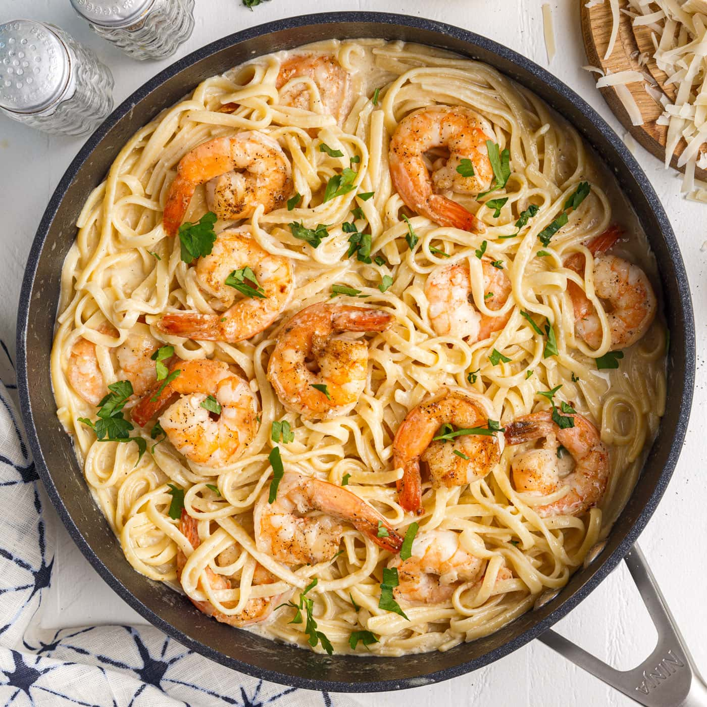

Shrimp Pasta Recipe

Ingredients
250g spaghetti or linguine
300g shrimp, peeled and deveined
3 tablespoons olive oil
3 cloves garlic, minced
1/2 teaspoon red pepper flakes (optional)
1/2 cup white wine (or chicken broth)
1 cup cherry tomatoes, halved
Salt and pepper, to taste
Fresh parsley, chopped (for garnish)
Grated Parmesan cheese (for serving)
Directions:
Cooking the Pasta
- Bring a large pot of salted water to a boil. Cook spaghetti or linguine according to package instructions until al dente. Drain and set aside.
Preparing the Shrimp
- In a large skillet, heat olive oil over medium heat.
- Add minced garlic and red pepper flakes (if using) and sauté for about 1 minute, until fragrant.
- Add the shrimp to the skillet and season with salt and pepper. Cook for 2-3 minutes, until shrimp are pink and opaque.
- Pour in white wine (or chicken broth) and bring to a simmer. Cook for an additional 2 minutes.
- Add cherry tomatoes and cooked pasta to the skillet. Toss to combine and heat through.
Serving
- Garnish with chopped parsley and serve with grated Parmesan cheese.